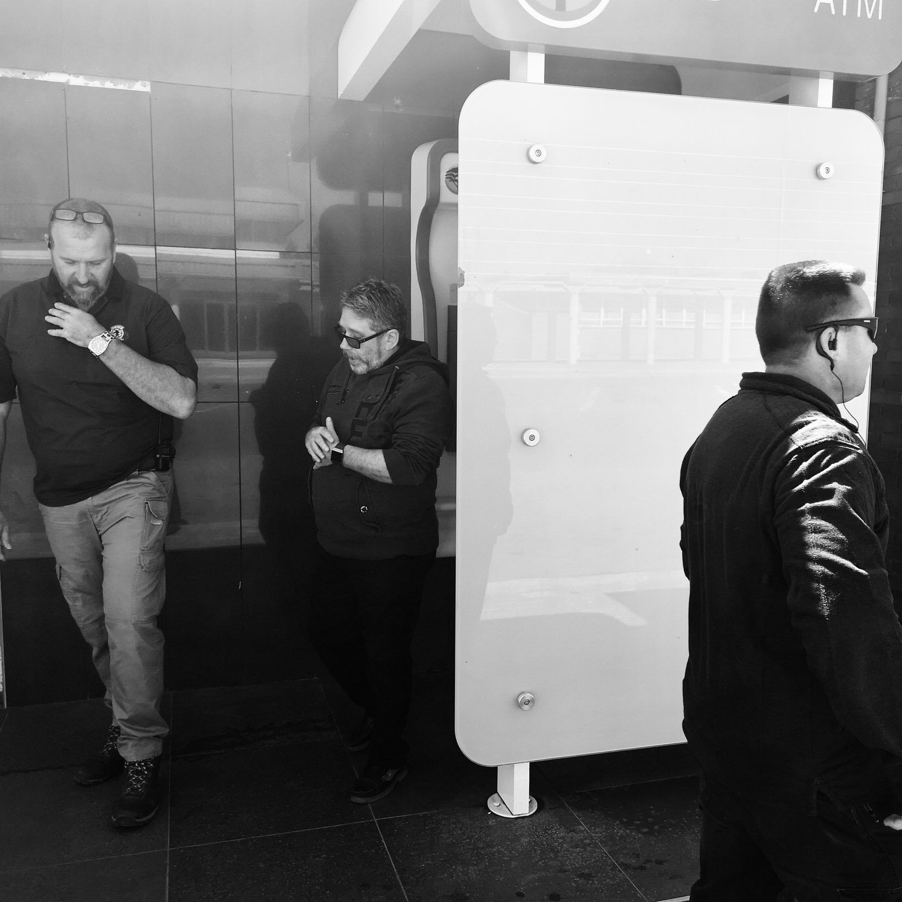
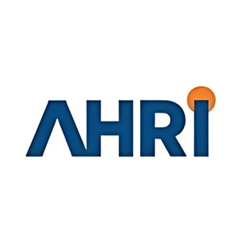
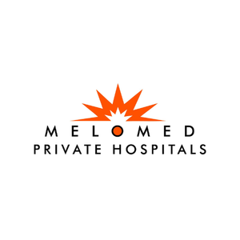
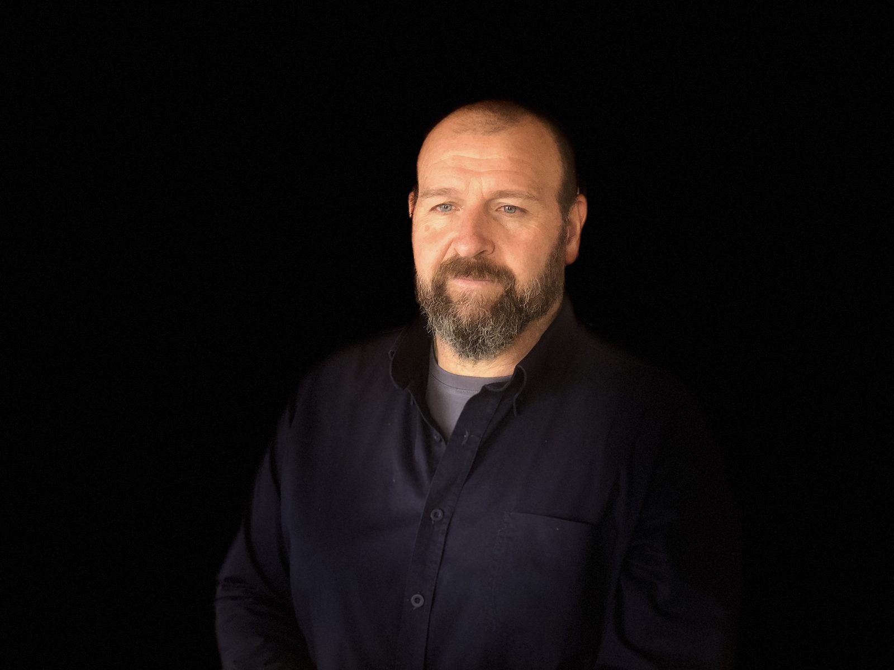

Frankfort, Free State / Registered 2015
Accreditedemergency andclose protectiontraining
At your premises, or at our residential centre in Villiers with accommodation for learners.
What we do
Eleven courses, from infant CPR to a Pearson BTEC in close protection, under one set of awarding bodies.
Train Pro was registered in 2015 on the view that medical and security work interlink too closely to keep teaching them apart. The close protection qualification carries its medical unit inside it. The pre-hospital awards are built for people who arrive first because of their job title.
Most delivery happens at the client site. The longer security courses run at our own residential centre in Villiers, which has accommodation for learners.
Courses
Villiers, Free State
A residentialtraining centre
A close protection course runs fifteen days. FPOS Level 3 runs five. The statutory first aid block runs six. For anyone travelling in, accommodation decides whether they attend.
Accreditation
registered centre
Care endorsement
descriptor, FREC L3
CPO Level 3
A training company can print anything. What an employer, a client or an overseas contractor checks is the awarding organisation and the centre number behind it. Nine bodies sit behind the Train Pro range.
- Registered centre status is what permits Train Pro to deliver and certificate Qualsafe qualifications in South Africa, under centre number 0907253.
- FPHC endorsement is why FPOS and FREC Level 3 read the same way abroad as they do here.
- FREC Level 3 has been accepted by employers in austere environments including the Republic of Iraq.
Trusted by



Who runs it
DavidSpangenberg
A bachelor's degree in law enforcement. Moderator with various SETAs. Qualified bodyguard and instructor with Education and Training certification in the UK, alongside studies in Occupational Health and Safety and in Project Management.
The team around him is drawn from security, health care and education and training, with private and public sector experience nationally and internationally.
Questions
Do you come to us, or do we come to you?
Both. Most of our work runs at the client site: your building, your staff, your shift pattern, no travel cost on your side. We also run a residential training centre in Villiers with accommodation for learners, which is where the longer security courses usually run.
Are these qualifications recognised outside South Africa?
FPOS and FREC Level 3 are Qualsafe Awards qualifications endorsed by the Faculty of Pre-Hospital Care of the Royal College of Surgeons of Edinburgh. FREC Level 3 has been accepted by employers in austere environments including the Republic of Iraq. The close protection qualification is a Pearson BTEC Level 3 Certificate. BLS and Heartsaver are American Heart Association programmes.
Do I need prior experience or a medical background?
For most courses, no. FPOS Level 3, FREC Level 3, the full CPO Level 3, Heartsaver, First Aid Essentials for Children, Baby Basics and the ASM 100 and 200 Series all assume no prior knowledge. BLS and CPR for Professionals require either prior first aid knowledge or registered healthcare professional status.
How long does certification last?
FPOS Level 3 and FREC Level 3 run three years. FREC graduates complete a BLS course each year to keep CPD points current. ASM recommends a refresher every two years. For the rest, tell us which certificate you hold and we will confirm your renewal window.
Which first aid level does my workplace need?
That depends on your site, your headcount and your risk profile under the Occupational Health and Safety Act, Act 85 of 1993. The duty sits with the employer. Send us your situation and we will tell you which level you must hold before you book anything.
Do the clinical courses carry CPD points?
Basic Life Support and CPR for Professionals each carry 15 CPD points, 1 000 Discovery Miles and 2 SAIOSH points.
What does a course cost?
Price depends on the course, the group size and whether we run it on your site or at the training centre. Send us the course and the number of people and you get a written quote back.
Can you train a whole team at once?
Yes, and it is usually cheaper. Group delivery at your premises is the format we run most often, particularly for the statutory first aid levels and for BLS refreshers across a clinical team.
Book a course
Send the courseand the headcount
You get dates and a written quote. If you are unsure which course you need, say so and we will tell you which one your role or your site requires.